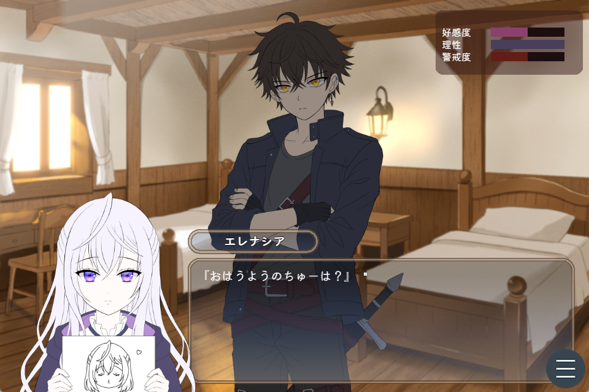
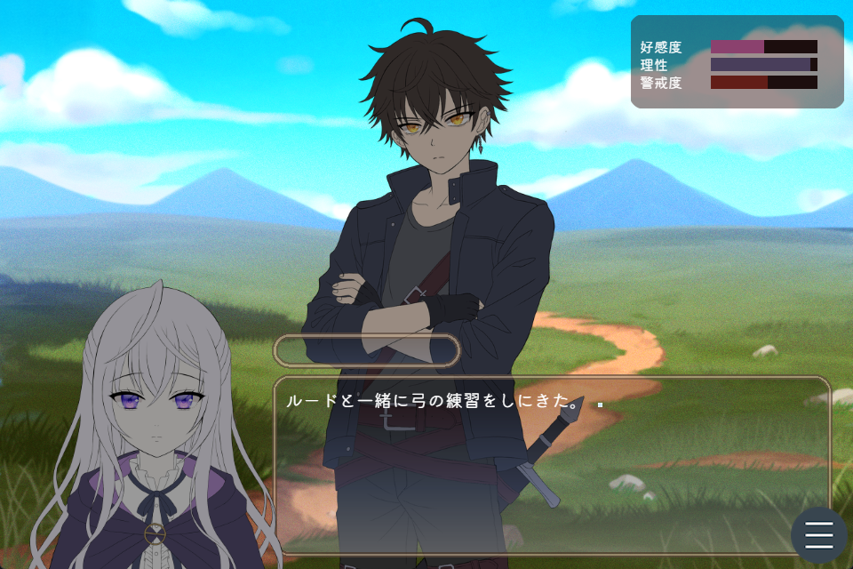
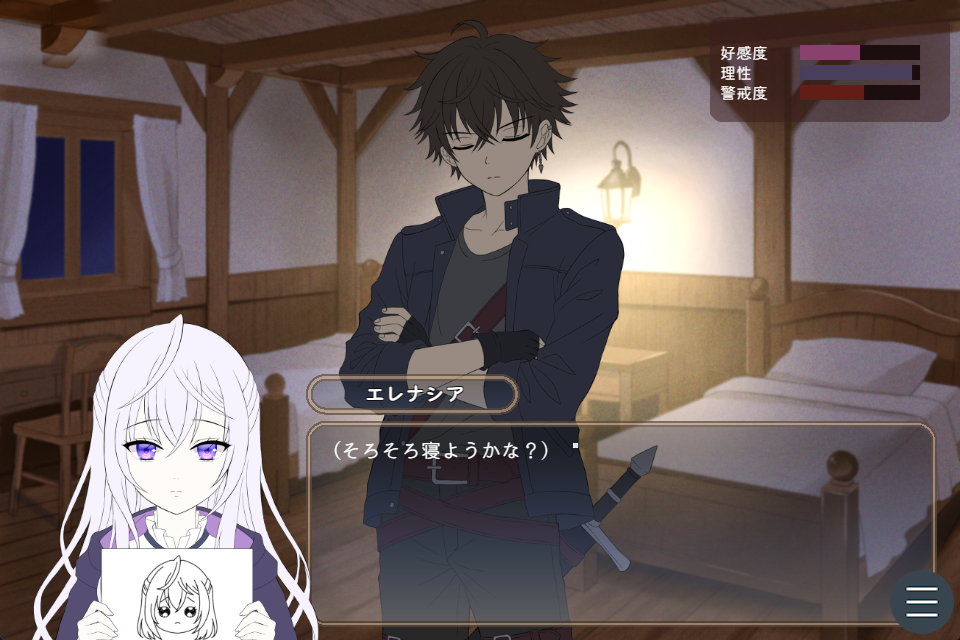

MORNING
朝
会話を選んで、一日のはじまりを一緒に過ごす。
無愛想な剣士を、7日間でどこまでメロメロにできる？
ある日、ルードにキスをされたエレナシア。
けれど、そのキスがどういう意味だったのか、彼女はいまだに分からない。
──もう一度キスをすれば、何かが分かるかもしれない。
そう思ったエレナシアは、ルードに頼んでみることにした。
『もう一度、してくれる？』
「……どういう意味か分かってて言ってんのか？」
もちろん、分かっていない。
そしてあっさり断られてしまったエレナシアは、ひとつの目標を立てる。
次の目的地に着くまで、あと７日。
それまでにキスの意味を突き止め、今度こそルードにもう一度キスしてもらう。
果たしてエレナシアは、無事にその答えへ辿り着けるのか──。
プレイヤーはエレナシアとなり、ルードと7日間を過ごします。
朝・昼・夜の行動を選び、好感度を上げ、警戒心をほどき、ときには理性を削っていきましょう。
あなたの選択によって、ぶっきらぼうなルードとの距離や、迎える結末が変化します。
素直に甘える天使になるも、彼を困らせる小悪魔になるも、あなた次第。
ただし、ルードを信じていないような行動を取ると、彼は拗ねてしまうかもしれません。
無愛想で警戒心の強い剣士を、
どこまでメロメロにできるのか――。
エレナシア視点で楽しむ、短編コミュニケーションゲームです。
朝・昼・夜。選んだ行動が、ふたりの距離を少しずつ変えていきます。

MORNING
会話を選んで、一日のはじまりを一緒に過ごす。

DAYTIME
弓の訓練やお手伝い、自由行動で距離を縮める。

NIGHT
一日の終りは、いつもより少し素直な時間を。
変化する3つのパラメータ
ELENACIA
沈黙の姫
RUDE
ぶっきらぼうな剣士